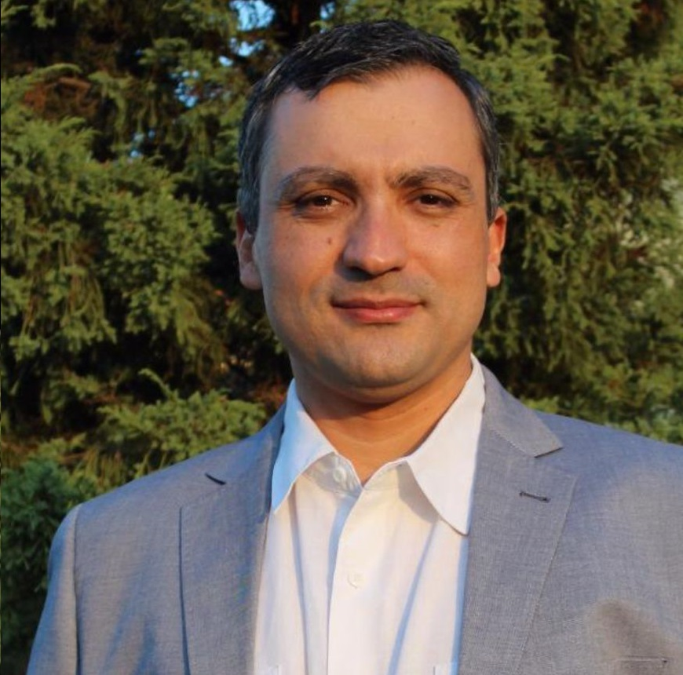

Endereço

Dr. Cleber Naief
Sobre mim
- Médico pela Universidade Federal de Minas Gerais (2000)
e Psiquiatra pelo Hospital das Clínicas também da UFMG (2002).
- Residente em em Manaus - AM desde a convocação do Exército
Brasileiro em 2004 para serviço militar como médico temporário.
- Trabalhei no extinto Hospital Psiquiátrico Eduardo Ribeiro
(2004 a 2012), onde foi coordenador da Residência Médica em
Psiquiatria por 4 anos e contribuindo para termos os primeiros
psiquiatras formados no Amazonas.
- Psiquiatra da Infância e da Adolescência (2007).
- Psiquiatra Forense (2010).
- Foi fundador da Associação Amazonense de Psiquiatria e
seu presidente por dois mandatos (2016 a 2022).
- Foi Diretor Regional Norte na chapa eleita da
Associação Brasileira de Psiquiatria (2017 a 2019).
- Membro do Departamento de Psiquiatria da Infância e
da Adolescência da ABP (2023).
Especialidades
- Médico, CRM-AM: 4.707
- Psiquiatra, RQE: 1729.
- Psiquiatra da Infância e da Adolescência, RQE: 2454.
- Psiquiatra Forense, RQE: 2820.
Partipações
Endereço e Mapa
Meu Endereço
Rua Raimundo Polari
Manaus, Amazonas CEP 69055-250
Localização no Mapa
- Médico pela Universidade Federal de Minas Gerais (2000) e Psiquiatra pelo Hospital das Clínicas também da UFMG (2002).
- Residente em em Manaus - AM desde a convocação do Exército Brasileiro em 2004 para serviço militar como médico temporário.
- Trabalhei no extinto Hospital Psiquiátrico Eduardo Ribeiro (2004 a 2012), onde foi coordenador da Residência Médica em Psiquiatria por 4 anos e contribuindo para termos os primeiros psiquiatras formados no Amazonas.
- Psiquiatra da Infância e da Adolescência (2007).
- Psiquiatra Forense (2010).
- Foi fundador da Associação Amazonense de Psiquiatria e seu presidente por dois mandatos (2016 a 2022).
- Foi Diretor Regional Norte na chapa eleita da Associação Brasileira de Psiquiatria (2017 a 2019).
- Membro do Departamento de Psiquiatria da Infância e da Adolescência da ABP (2023).
Especialidades
- Médico, CRM-AM: 4.707
- Psiquiatra, RQE: 1729.
- Psiquiatra da Infância e da Adolescência, RQE: 2454.
- Psiquiatra Forense, RQE: 2820.
Partipações
Meu Endereço
Rua Raimundo Polari
Manaus, Amazonas CEP 69055-250